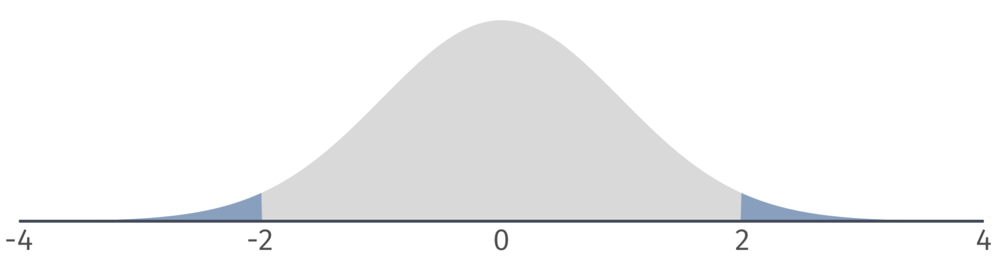
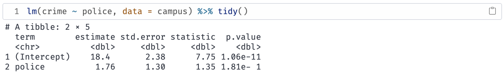
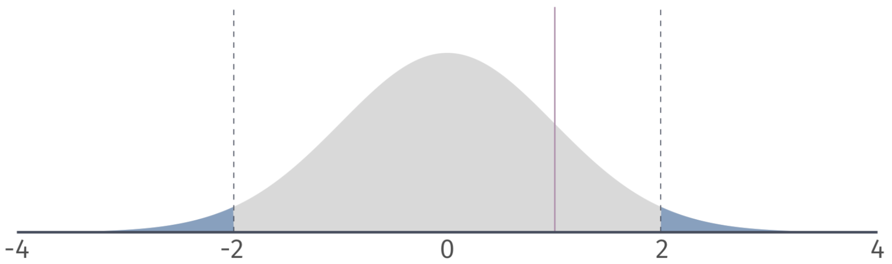
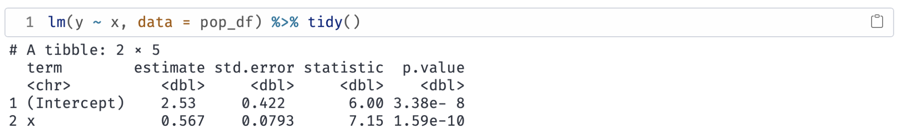
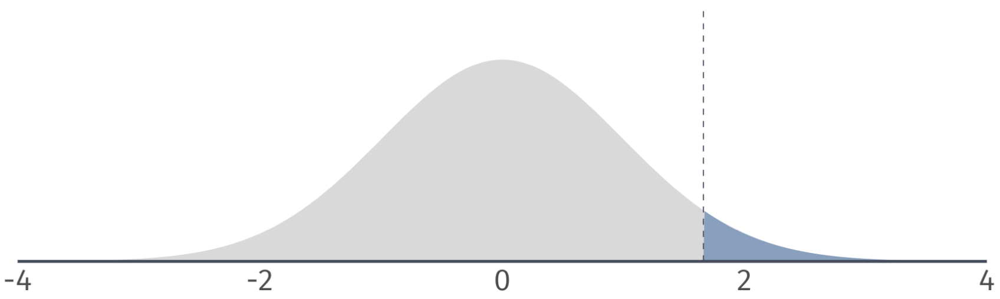
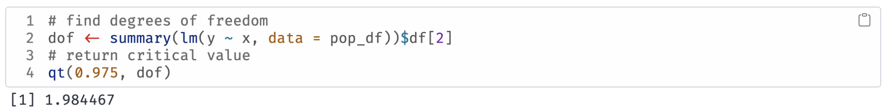
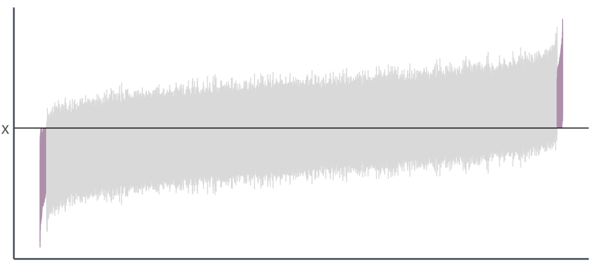

Inference
EC 320 - Introduction to Econometrics
2025
Prologue
OLS
Up to now, we have been focusing on OLS considering:
- How we model regressions with this estimator
- How the estimator is derived and what properties it demonstrates
- How the classical assumptions make the estimator BLUE
We have mostly ignored drawing conclusions about the true population parameters from the estimates of the sample data
This is inference
OLS
Thus far we have fit an OLS model to find an answer to the following questions:
- How much does an additional year of schooling increase earnings?
- Does the number of police officers affect campus crime rates?
Up to now, we have not discussed our confidence in our fitted relationship
Even if all 6 Assumptions hold, sample selection might generate the incorrect conclusions in a completely unbiased, coincidental fashion.
Previously we used the first 3 assumptions to show that OLS is unbiased:
\[ \mathop{\mathbb{E}}\left[ \hat{\beta} \right] = \beta \]
We used the first 5 assumptions to derive a formula for the variance of the OLS estimator:
\[ \mathop{\text{Var}}(\hat{\beta}) = \frac{\sigma^2}{\sum_{i=1}^n (X_i - \bar{X})^2} \]
By using the variance of the OLS estimator, we can infer confidence from the sampling distribution
Sampling distribution
The probability distribution of the OLS estimators obtained from repeatedly drawing random samples of the same size from a population and fitting point estimates each time.
Provides information about their variability, accuracy, and precision across different samples.
Point estimates
The fitted values of the OLS estimator (e.g., \(\hat{\beta}_0, \hat{\beta}_1\))
Sampling distribution properties
1. Unbiasedness: If the Gauss-Markov assumptions hold, the OLS estimators are unbiased (i.e., \(E(\hat{\beta}_0) = \beta_0\) and \(E(\hat{\beta}_1) = \beta_1\))
2. Variance: The variance of the OLS estimators describes their dispersion around the true population parameters.
3. Normality: If the errors are normally distributed or the sample size is large enough, by the Central Limit Theorem, the sampling distribution of the OLS estimators will be approximately normal.1
Sampling distribution
The sampling distribution of \(\hat{\beta}\) to conduct hypothesis tests.
Use all 6 classical assumptions to show that OLS is normally distributed:
\[ \hat{\beta} \sim \mathop{N}\left( \beta, \frac{\sigma^2}{\sum_{i=1}^n (X_i - \bar{X})^2} \right) \]
Let’s look at a simulation
Plotting the distributions of the point estimates in a histogram
Simulating 1,000 draws
Plotting the distributions of the point estimates in a histogram
Simulating 10,000 draws
Inference
Inference
Our current workflow consists of:
- Get data (points with \(X\) and \(Y\) values)
- Regress \(Y\) on \(X\) (aka \(Y = \beta_{0} + \beta_{1}X\))
- Plot the point estimates \((\hat{\beta}_{0},\hat{\beta}_{1})\) and report them
But when do we learn something? We are still missing a step.
- For \(\hat{\beta}_{1}\), can we rule out a previously hypothesized values?
- How condifent should we be in the precision of our estimates?
We need to be careful about our sample being atypical \(\Rightarrow\) uncertainty
However, there is a problem.
Recall the variance of the point estimate \(\hat{\beta_1}\) \[ \mathop{\text{Var}}(\hat{\beta}_1) = \frac{\sigma^2}{\sum_{i=1}^n (X_i - \bar{X})^2} \]
The problem is that \(\color{#BF616A}{\sigma^2}\) is unobserved. So what do we do? Estimate it.
Estimating error variance
We can estimate the variance of \(u_i\) (\(\color{#BF616A}{\sigma^2}\)) using the sum of squared residuals (RSS):
\[ s^2_u = \dfrac{\sum_i \hat{u}_i^2}{n - k} \]
where \(n\) is the number of observations and \(k\) is the number of regression parameters. (In a simple linear regression, \(k=2\))
If the assumptions from Gauss-Markov hold, then \(s^2_u\) is an unbiased estimator of \(\sigma^2\).
In essence, we are learning from our prediction errors
OLS Variance
With \(s^2_u = \dfrac{\sum_i \hat{u}_i^2}{n - k}\), we can calculate the estimated variance of \(\hat{\beta}_1\)
\[ \mathop{\text{Var}}(\hat{\beta}_1) = \frac{s^2_u}{\sum_{i=1}^n (X_i - \bar{X})^2} \]
Taking the square root, we get the standard error of the OLS estimator:
\[ \mathop{\widehat{\text{SE}}} \left( \hat{\beta}_1 \right) = \sqrt{ \frac{s^2_u}{\sum_{i=1}^n (X_i - \bar{X})^2} } \]
The standard error is the standard deviation of the sampling distribution.
Inference
After deriving the distribution of \(\hat{\beta}_1\)1, we have two (related) options for formal statistical inference (learning) about our unknown parameter \(\beta_1\):
- Hypothesis testing: Determine whether there is statistically significant evidence to reject a hypothesized value or range of values.
- Confidence intervals: Use the estimate and its standard error to create an interval that will generally2 contain the true parameter.
Hypothesis Testing
Hypothesis Tests
Systematic procedure that gives us evidence to hang our hat on. Starting with a Null hypothesis (\(H_0\)) and an Alternative hypothesis (\(H_1\))
\[ \begin{align*} H_0:& \beta_1 = 0 \\ H_1:& \beta_1 \neq 0 \end{align*} \]
In the context of the wage regression:
\[ \text{Wage}_i = \beta_0 + \beta_1 \cdot \text{Education}_i + u_i \]
\(H_0\): Education has no effect on wage
\(H_1\): Education has an effect on wage
Possible outcomes
Within this structure, four possible outcomes exist:
1. We fail to reject the null hypothesis and the null is true.
Ex. Education has no effect on wage and, correctly, we fail to reject \(H_0\).
Possible outcomes
Within this structure, four possible outcomes exist:
1. We fail to reject the null hypothesis and the null is true.
2. We reject the null hypothesis and the null is false.
Ex. Education has an effect on wage and, correctly, we reject \(H_0\).
Possible outcomes
Within this structure, four possible outcomes exist:
1. We fail to reject the null hypothesis and the null is true.
2. We reject the null hypothesis and the null is false.
3. We reject the null hypothesis, but the null is actually true.
Ex. Education has no effect on wage, but we incorrectly reject \(H_0\).
This is an error. Defined as a Type I error.
Possible outcomes
Within this structure, four possible outcomes exist:
1. We fail to reject the null hypothesis and the null is true.
2. We reject the null hypothesis and the null is false.
3. We reject the null hypothesis, but the null is actually true.
4. We fail to reject the null hypothesis, but the null is actually false.
Ex. Education has an effect on wage, but we incorrectly fail to reject \(H_0\).
This is an error. Defined as a Type II error.
Possible outcomes
Within this structure, four possible outcomes exist:
1. We fail to reject the null hypothesis and the null is true.
2. We reject the null hypothesis and the null is false.
3. We reject the null hypothesis, but the null is actually true.1
4. We fail to reject the null hypothesis, but the null is actually false.2
Or… from the golden age of textbook illustrations

Hypothesis Tests
Goal: Make a statement about \(\beta_1\) using information on \(\hat{\beta}_1\).
\(\hat{\beta}_1\) is random—it could be anything, even if \(\beta_1 = 0\) is true.
- But if \(\beta_1 = 0\) is true, then \(\hat{\beta}_1\) is unlikely to take values far from zero.
- As the standard error shrinks, we are even less likely to observe “extreme” values of \(\hat{\beta}_1\) (assuming \(\beta_1 = 0\)).
Hypothesis testing takes extreme values of \(\hat{\beta}_1\) as evidence against the null hypothesis, but it will weight them by information about variance the estimated variance of \(\hat{\beta}_1\).
Hypothesis Tests
\(H_0\): \(\beta_1 = 0\)
\(H_1\): \(\beta \neq 0\)
To conduct the test, we calculate a \(t\)-statistic1:
\[ t = \frac{\hat{\beta}_1 - \beta_1^0}{\mathop{\hat{\text{SE}}} \left( \hat{\beta}_1 \right)} \]
Distributed by a \(t\)-distribution with \(n-2\) degrees of freedom2.
Hypothesis Testing
Normal distribution vs. \(t\) distribution
- A normal distribution has the same shape for any sample size.
- The shape of the t distribution depends the degrees of freedom.

- Degrees of freedom = 5.
Hypothesis Testing
Normal distribution vs. \(t\) distribution
- A normal distribution has the same shape for any sample size.
- The shape of the t distribution depends the degrees of freedom.
- Degrees of freedom = 50.
Hypothesis Testing
Normal distribution vs. \(t\) distribution
- A normal distribution has the same shape for any sample size.
- The shape of the t distribution depends the degrees of freedom.

- Degrees of freedom = 500.
Hypothesis Testing
Two sided t Tests
To conduct a t test, compare the \(t\) statistic to the appropriate critical value of the t distribution.
- To find the critical value in a t table, we need the degrees of freedom and the significance level \(\alpha\).
Reject (\(\text{H}_0\)) at the \(\alpha \cdot 100\)-percent level if
\[ \left| t \right| = \left| \dfrac{\hat{\mu} - \mu_0}{\mathop{\text{SE}}(\hat{\mu})} \right| > t_\text{crit}. \]
Hypothesis Tests
Next, we use the \(\color{#434C5E}{t}\)-statistic to calculate a \(\color{#B48EAD}{p}\)-value.

Describes the probability of seeing a \(\color{#434C5E}{t}\)-statistic as extreme as the one we observe if the null hypothesis is actually true.
But…we still need some benchmark to compare our \(\color{#B48EAD}{p}\)-value against.
Hypothesis Tests
We worry mostly about false positives, so we conduct hypothesis tests based on the probability of making a Type I error1.
How? We select a significance level, \(\color{#434C5E}{\alpha}\), that specifies our tolerance for false positives (i.e., the probability of Type I error we choose to live with).

To visualize Type I and Type II, we can plot the sampling distributions of \(\hat{\beta}_1\) under the null and alternative hypotheses
Hypothesis Tests
We then compare \(\color{#434C5E}{\alpha}\) to the \(\color{#B48EAD}{p}\)-value of our test.
If the \(\color{#B48EAD}{p}\)-value is less than \(\color{#434C5E}{\alpha}\), then we reject the null hypothesis at the \(\color{#434C5E}{\alpha}\cdot100\) percent level.
If the \(\color{#B48EAD}{p}\)-value is greater than \(\color{#434C5E}{\alpha}\), then we fail to reject the null hypothesis at the \(\color{#434C5E}{\alpha}\cdot100\) percent level.1
Ex. Are campus police associated with campus crime?
\(H_0\): \(\beta_\text{Police} = 0\)
\(H_1\): \(\beta_\text{Police} \neq 0\)
Significance level: \(\color{#434C5E}{\alpha} = 0.05\) (i.e., 5 percent test)
Test Condition: Reject \(H_0\) if \(p < \alpha\)
What is the \(\color{#B48EAD}{p}\)-value? \(p = 0.18\)
Do we reject the null hypothesis? No.
Hypothesis Tests
\(\color{#B48EAD}{p}\)-values are difficult to calculate by hand.
Alternative: Compare \(\color{#434C5E}{t}\)-statistic to critical values from the \({\color{#434C5E} t}\)-distribution.
Hypothesis Tests
Notation: \(t_{1-\alpha/2, n-2}\) or \(t_\text{crit}\).
- Find in a \(t\)-table using \(\color{#434C5E}{\alpha}\) and \(n-2\) degrees of freedom.
Compare the the critical value to your \(t\)-statistic:
- If \(|t| > |t_{1-\alpha/2, n-2}|\), then reject the null.
- If \(|t| < |t_{1-\alpha/2, n-2}|\), then fail to reject the null.
Two-sided tests
Based on a critical value of \(t_{1-\alpha/2, n-2} = t_{0.975, 100} = 1.98\) we can identify a rejection region on the \(\color{#434C5E}{t}\)-distribution.
If our \(\color{#434C5E}{t}\)-statistic is in the rejection region, then we reject the null hypothesis at the 5 percent level.
Ex.1 \(\alpha = 0.05\)

\(H_0\): \(\beta_1 = 0\)
\(H_1\): \(\beta_1 \neq 0\)
Notice that the \(\color{#434C5E}{t}\)-statistic is 7.15. The critical value is \(\color{#434C5E}{t_{\text{0.975, 28}}} = 2.05\).
Which implies that \(p < 0.05\). Therefore, we reject \(H_0\) at the 5% level.
Ex. Are campus police associated with campus crime? (\(\alpha = 0.1\))
\(H_0\): \(\beta_\text{Police} = 0\)
\(H_1\): \(\beta_\text{Police} \neq 0\)
The \(\color{#434C5E}{t \text{-stat}} = 1.35\). The critical value is \(\color{#434C5E}{t_{\text{0.95, 94}}} = 1.66\).
|\(\color{#434C5E}{t \text{-stat}}| < |\color{#434C5E}{t_{\text{crit}}}|\) implies that \(p > 0.05\). Therefore, we fail to reject \(H_0\) at the 10% level.
One-sided tests
We might be confident in a parameter being non-negative/non-positive.
One-sided tests assume that the parameter of interest is either greater than/less than \(H_0\).
Option 1 \(H_0\): \(\beta_1 = 0\) vs. \(H_1\): \(\beta_1 > 0\)
Option 2 \(H_0\): \(\beta_1 = 0\) vs. \(H_1\): \(\beta_1 < 0\)
If this assumption is reasonable, then our rejection region changes.
- Same \(\alpha\).
One-sided tests
Left-tailed: Based on a critical value of \(t_{1-\alpha, n-2} = t_{0.95, 100} = 1.66\), we can identify a rejection region on the \(t\)-distribution.

If our \(t\) statistic is in the rejection region, then we reject the null hypothesis at the 5 percent level.
One-sided tests
Right-tailed: Based on a critical value of \(t_{1-\alpha, n-2} = t_{0.95, 100} = 1.66\), we can identify a rejection region on the \(t\)-distribution.
If our \(t\) statistic is in the rejection region, then we reject the null hypothesis at the 5 percent level.
Ex. Do campus police deter campus crime? (\(\alpha = 0.1\))
Suppose we rule out the possibility that police increase crime, but not that they have no effect.
\(H_0\): \(\beta_\text{Police} = 0\)
\(H_1\): \(\beta_\text{Police} < 0\)
Notice that the \(\color{#434C5E}{t \text{-stat}} = 1.35\). The critical value is \(\color{#434C5E}{t_{\text{0.9, 94}}} = 1.29\).
Which implies that \(p > 0.05\). Therefore, we reject \(H_0\) at the 5% level.
Confidence Intervals
Confidence intervals
Until now, we have considered point estimates of population parameters.
- Sometimes a range of values is more interesting/honest.
We can construct \((1-\alpha)\cdot100\)-percent level confidence intervals for \(\beta_1\)
\[ \hat{\beta}_1 \pm t_{1-\alpha/2, n-2} \, \mathop{\hat{\text{SE}}} \left( \hat{\beta}_1 \right) \]
\(t_{1-\alpha/2,n-2}\) denotes the \(1-\alpha/2\) quantile of a \(t\) distribution with \(n-2\) degrees of freedom.
Confidence intervals
Q: Where does the confidence interval formula come from?
A: Formula is a result from the rejection condition of a two-sided test.
Reject \(H_0\) if
\[ |t| > t_\text{crit} \]
The test condition implies that we:
Fail to reject \(H_0\) if
\[ |t| \leq t_\text{crit} \]
or, \[ -t_\text{crit} \leq t \leq t_\text{crit} \]
Confidence intervals
Replacing \(t\) with its formula gives:
Fail to reject \(H_0\) if
\[-t_\text{crit} \leq \frac{\hat{\beta}_1 - \beta_1^0}{\mathop{\hat{\text{SE}}} \left( \hat{\beta}_1 \right)} \leq t_\text{crit} \]
Standard errors are always positive, so the inequalities do not flip when we multiply by \(\mathop{\hat{\text{SE}}} \left( \hat{\beta}_1 \right)\):
Fail to reject \(H_0\) if \[ -t_\text{crit} \mathop{\hat{\text{SE}}} \left( \hat{\beta}_1 \right) \leq \hat{\beta}_1 - \beta_1^0\leq t_\text{crit} \mathop{\hat{\text{SE}}} \left( \hat{\beta}_1 \right) \]
Confidence intervals
Subtracting \(\hat{\beta}_1\) yields
Fail to reject \(H_0\) if \[ -\hat{\beta}_1 -t_\text{crit} \mathop{\hat{\text{SE}}} \left( \hat{\beta}_1 \right) \leq - \beta_1^0 \leq - \hat{\beta}_1 + t_\text{crit} \mathop{\hat{\text{SE}}} \left( \hat{\beta}_1 \right) \]
Multiplying by -1 and rearranging gives
Fail to reject \(H_0\) if
\[ \hat{\beta}_1 - t_\text{crit} \mathop{\hat{\text{SE}}} \left( \hat{\beta}_1 \right) \leq \beta_1^0 \leq \hat{\beta}_1 + t_\text{crit} \mathop{\hat{\text{SE}}} \left( \hat{\beta}_1 \right) \]
Confidence intervals
Replacing \(\beta_1^0\) with \(\beta_1\) and dropping the test condition yields the interval:
\[ \hat{\beta}_1 - t_\text{crit} \mathop{\hat{\text{SE}}} \left( \hat{\beta}_1 \right) \leq \beta_1 \leq \hat{\beta}_1 + t_\text{crit} \mathop{\hat{\text{SE}}} \left( \hat{\beta}_1 \right) \]
which is equivalent to
\[ \hat{\beta}_1 \pm t_\text{crit} \, \mathop{\hat{\text{SE}}} \left( \hat{\beta}_1 \right) \]
Confidence intervals
Main insight:
- If a 95 percent confidence interval contains zero, then we fail to reject the null hypothesis at the 5 percent level.
- If a 95 percent confidence interval does not contain zero, then we reject the null hypothesis at the 5 percent level.
Generally, a \((1- \alpha) \cdot 100\) percent confidence interval embeds a two-sided test at the \(\alpha \cdot 100\) level.
Confidence intervals Ex.


95% confidence interval for \(\beta_1\) is:
\[ 0.567 \pm 1.98 \times 0.0793 = \left[ 0.410,\, 0.724 \right] \]
Confidence intervals
We have a confidence interval for \(\beta_1\), i.e., \(\left[ 0.410,\, 0.724 \right]\)
What does it mean?
Informally: The confidence interval gives us a region (interval) in which we can place some trust (confidence) for containing the parameter.
More formally: If we repeatedly sample from our population and construct confidence intervals for each of these samples, then \((1-\alpha) \cdot100\) percent of our intervals (e.g., 95%) will contain the population parameter somewhere in the interval.
Confidence intervals
Going back to our simulation…
We drew 10,000 samples (each of size \(n = 30\)) from our population and estimated our regression model for each sample:
\[ Y_i = \hat{\beta}_1 + \hat{\beta}_1 X_i + \hat{u}_i \]
The true parameter values are \(\beta_0 = 0\) and \(\beta_1 = 0.5\)
Let’s estimate 95% confidence intervals for each of these intervals…
Confidence intervals
From our previous simulation, 97.7% of 95% confidence intervals contain the true parameter value of \(\beta_1\).
Ex. Association of police with crime
You can instruct tidy to return a 95 percent confidence interval for the association of campus police with campus crime:

Ex. Association of police with crime

Four confidence intervals for the same coefficient.
EC320, Lecture 04 | Inference